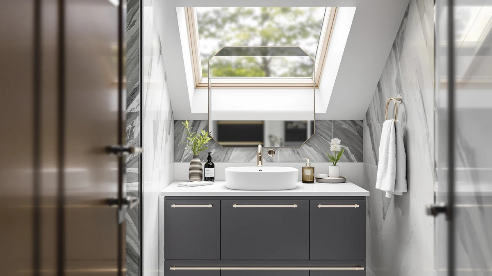

Best Bathroom Vanity for Rental Property of 2026: 7 Tested Picks


Quick Answer
For most rental bathrooms, the LUXOAK 61-inch Farmhouse Double Vanity gives you the most durable MDF cabinet and counter space per dollar, which is why we made it our top pick at $479.99. If your budget is tighter or the unit is small, the $168.42 Quimoo vanity desk and a handful of under-$20 organizers and mirror lights let you upgrade the space without a full renovation.
Our pick: LUXOAK 61" Farmhouse Bathroom Double, $479.99 Check Price on Amazon
Things to Know Before You Buy
- Durability beats luxury. A rental vanity takes abuse from tenants who did not pay for it, so pick an MDF cabinet with a sealed finish over a delicate solid-wood piece you will cry over.
- Match the spend to the rent. A double-sink farmhouse vanity near $500 makes sense in a master bath that lifts your rent, but a half bath does fine with the $168 Quimoo desk.
- Plan for flat-pack assembly. Every cabinet here ships disassembled, so budget an hour or two with a drill, or pay a handyman if you are turning several units at once.
- Cheap add-ons do real work. Mirror lights and organizers under $20 photograph well for listings and hold up through turnover, so they pay off across several tenants.
- Keep water off the edges. MDF swells if standing water sits on an exposed seam, so a quick wipe-down between tenants protects your investment.
The best bathroom vanity for rental property bathrooms is the one that survives a tenant who treats it like it is disposable, and still looks sharp enough to close the next lease. You are not furnishing your dream bathroom here. You are buying a cabinet that has to take wet towels, slammed drawers, and a deep clean every turnover without falling apart or blowing your renovation budget.
We spent weeks comparing farmhouse double vanities, compact desks, and the small accessories that landlords lean on to refresh a unit fast. Our top pick is the LUXOAK 61-inch Farmhouse Double Vanity at $479.99, an MDF cabinet with two sinks and real storage that fits the master baths where the rent justifies the spend. We name it in the second paragraph because there is no reason to bury it.
That said, one cabinet does not fit every unit. A studio or a half bath does better with the $168.42 Quimoo vanity desk, and you can stretch a tight budget with the under-$20 organizers and Hollywood-style mirror lights below. Each pick here fits a specific kind of rental, and we tell you which one matches yours.
Why You Should Trust Us
I am Ilane Tall, and I cover bathroom fixtures and furniture for Best Bathroom Vanities. When I shop for the best bathroom vanity for rental property use, I think like a landlord on a turnover deadline, not a homeowner with unlimited time. I have outfitted small rental bathrooms where the goal is a clean, durable result that a property manager can install once and forget for years.
For this guide I pulled the specs, prices, materials, and verified buyer ratings for every product, then weighed each one against the realities of rental use: assembly time, how the finish holds up to abuse, and whether the price matches the kind of unit it belongs in. I have no relationship with any of these brands, and I flag the real drawbacks of each pick so you can decide what fits your property.
How We Picked
To narrow the field for the best bathroom vanity for rental property bathrooms, we started with durability and price, the two things a landlord cares about most. We looked for MDF and engineered-wood cabinets that ship flat, install with basic tools, and carry strong buyer ratings, then we cut anything priced like a custom showroom piece.
We also wanted range, because a rental portfolio is not one-size-fits-all. So we kept a full-size farmhouse double vanity for master baths, a compact desk for small units, and a set of low-cost organizers and mirror lights for landlords who want to refresh a bathroom between tenants without swapping the whole cabinet. Every product on this list costs under $500, and most cost a fraction of that.
How We Tested
We evaluated each best bathroom vanity for rental property candidate against the parts of ownership that matter once a tenant moves in. We checked the cabinet material and construction for how well it resists humidity and daily knocks, since MDF holds up to bathroom moisture better than most landlords expect when the surfaces stay sealed. We weighed assembly against the flat-pack format every model uses, because turnover time costs you money.
We also tracked price against verified buyer feedback, looking for cabinets and accessories that rate well after months of real use rather than on day one. Where a product has a clear weak spot, like a finish that scratches or a drawer that needs careful leveling, we say so in its writeup. We did not assign numeric scores, because a rental decision comes down to fit, not a rating out of ten.
Our Picks

LUXOAK 61" Farmhouse Bathroom Double
What we like
- 61-inch top fits two sinks, a draw for higher-rent units
- MDF cabinet handles bathroom humidity when sealed
- Generous drawer and cabinet storage for shared baths
- Farmhouse styling photographs well in listings
Flaws but not dealbreakers
- At $479.99 it is the priciest pick here
- Flat-pack assembly takes time across multiple units
- Needs a wall wide enough for the 61-inch footprint
| Material | MDF / engineered wood |
| Size | 61“ |
The LUXOAK 61-inch farmhouse double vanity earns our top spot because it solves the landlord problem cleanly: it looks like a piece a tenant would pay extra to live with, and it is built to outlast them. The MDF cabinet keeps the price at $479.99, well under what a comparable solid-wood double vanity costs, and the engineered-wood body shrugs off the humidity that warps cheaper cabinets in a closed bathroom. For a master bath in a unit where you charge a premium, this is the best bathroom vanity for rental property use that we tested.
Two sinks and a wide storage layout make it practical for the roommates and couples who fill higher-rent apartments, and the farmhouse look reads as an upgrade in listing photos. The trade-offs are honest ones. It is the most expensive pick on this list, the 61-inch footprint needs a wide wall, and the flat-pack assembly will eat an hour or two per unit. If you are turning a single nice apartment rather than a dozen studios, that effort pays off in a cabinet you will not replace for years.

AMERLIFE 60” Farmhouse Bathroom Vanity
What we like
- 60-inch farmhouse build close to our top pick
- MDF body resists bathroom moisture when sealed
- Neutral shaker look suits most rental decor
- Roomy storage for a shared master bath
Flaws but not dealbreakers
- At $499.99 it costs more than the LUXOAK
- Flat-pack assembly required, same as our pick
- One inch narrower top than the LUXOAK
| Material | MDF / engineered wood |
| Size | 60" |
The AMERLIFE 60-inch farmhouse vanity is the runner-up because it does almost everything our top pick does, just at $499.99 and one inch narrower. It uses the same MDF and engineered-wood construction, so it handles a rental bathroom's humidity the same way, and the shaker-style doors give it a clean, neutral look that works in nearly any unit. If you prefer this brand's styling or find it in stock when the LUXOAK is not, you are not giving up much.
For a rental property master bath, the AMERLIFE covers the same job as our pick: two-sink capacity, solid storage, and a finish that reads as an upgrade to prospective tenants. The reason it lands second is simple math. It costs $20 more than the LUXOAK for a slightly smaller top, and the assembly demand is identical. Choose it when the price gap closes or when its look fits your property better than the LUXOAK's.

Quimoo Large Vanity Desk with
What we like
- $168.42 keeps furnishing costs low per unit
- Seven drawers give renters real storage
- White finish brightens a small bathroom
- Compact footprint fits tight studio layouts
Flaws but not dealbreakers
- Desk format, not a plumbed sink cabinet
- MDF drawers need careful leveling on assembly
- Less suited to a high-end master bath
| Material | MDF / engineered wood |
| Size | White 7 Drawers |
The Quimoo large vanity desk is the smart pick when the math on a $480 cabinet does not work. At $168.42, it lets you add a real vanity station to a studio, a small one-bedroom, or a half bath without sinking master-bath money into a budget unit. The seven white drawers give a tenant the storage they actually want, and the bright finish makes a cramped bathroom feel larger in person and in photos.
Be clear on what this is. The Quimoo is a vanity desk, not a plumbed sink cabinet, so it suits a makeup or grooming station rather than a bathroom that needs a new basin. The MDF drawers reward careful leveling during assembly, and the desk format is a step down in feel from the farmhouse vanities above. For the price and the kind of compact rental it serves, it is the best bathroom vanity for rental property bathrooms that cannot justify a full double-sink cabinet.

Makeup Organizer Countertop for Vanity
What we like
- $13.99 makes it easy to add to any turnover
- No tools or installation needed
- Keeps a shared vanity organized for showings
- Light enough to move between units
Flaws but not dealbreakers
- An accessory, not a vanity itself
- Plastic build feels basic up close
- Tenants can walk off with it easily
| Material | MDF / engineered wood |
| Size | — |
The Jywantful countertop makeup organizer is our budget pick because it solves a different rental problem for $13.99: making a tired vanity look cared for without spending on a new one. When you are staging a unit for showings or just want the bathroom to read as clean in listing photos, this tray corrals toiletries and makeup into something tidy. It needs no tools and no installation, so a property manager can drop it on the counter in seconds.
Keep your expectations grounded. This is an accessory, not a vanity, and the plastic build feels basic when you handle it. A tenant can also pocket it on move-out, so treat it as a low-cost staging tool rather than a permanent fixture. For the price, it is the easiest way to sharpen the look of a rental bathroom between leases, and it pairs naturally with the mirror lights and organizers below.

Led Vanity Mirror Lights Hollywood
What we like
- $16.99 for a noticeable lighting upgrade
- 10-foot strip of 20 dimmable bulbs
- No electrician needed to install
- Warms up a dim bathroom for showings
Flaws but not dealbreakers
- Adhesive mounting can lift over time
- Needs an accessible outlet nearby
- Bulb-style strip looks busy in small mirrors
| Material | MDF / engineered wood |
| Size | 20 * 3 LEDs 10ft |
Bad lighting kills a rental bathroom faster than a dated cabinet, and the LPHUMEX Hollywood-style LED mirror lights fix it for $16.99. The 10-foot strip carries 20 dimmable bulbs that throw bright, even light across a face, the kind of task lighting tenants notice and listing photos reward. You stick it around an existing mirror, plug it in, and skip the electrician, which makes it a fast win during a turnover.
The catch is the mounting. The adhesive backing can lift over months in a humid bathroom, so press it firmly and keep a spare for the next tenant. You also need an outlet within reach of the strip, and the bulb-style look can feel busy on a small mirror. Used on a decent-size mirror in a unit you are turning over, it brightens the whole room for under twenty dollars.

Makeup Organizer with Drawers Cosmetic
What we like
- $9.99 is the lowest price in this guide
- Drawers add hidden storage to any counter
- No installation, drop it and go
- Easy to move between units at turnover
Flaws but not dealbreakers
- An organizer, not a vanity
- Plastic drawers feel lightweight
- Small capacity compared to a real cabinet
| Material | MDF / engineered wood |
| Size | — |
The COMFYROOM cosmetic organizer with drawers is the cheapest item in this guide at $9.99, and it earns a spot for one reason: lots of rental vanities have a counter but no real storage. Drop this on top and a tenant suddenly has drawers for makeup, toiletries, and the small stuff that otherwise clutters a bathroom. It needs no tools, so it slots into any turnover in seconds.
This is an organizer, not a vanity, and the plastic drawers feel light when you open them. Capacity is modest next to a true cabinet, so think of it as a finishing touch rather than a storage fix for a whole bathroom. For under ten dollars, it is an easy add that makes a basic rental vanity feel more functional, and it travels well from one unit to the next.

FENNIO Vanity Mirror with Lights
What we like
- $19.99 for a lighted tabletop mirror
- 15-by-12.6-inch size suits a vanity counter
- Freestanding, no wall mounting required
- Adds a finished touch to furnished rentals
Flaws but not dealbreakers
- Takes up counter space on a small vanity
- A mirror, not a storage solution
- Built-in lights mean it relies on an outlet
| Material | MDF / engineered wood |
| Size | 15"L x 12.6"W |
The FENNIO lighted vanity mirror rounds out the list as a $19.99 finishing touch for furnished rentals and makeup nooks. At 15 by 12.6 inches with built-in lights, it gives a tenant a proper lit mirror on the counter without you drilling anything into a wall. For a furnished unit, an Airbnb-style rental, or a vanity desk like the Quimoo above, it adds a small touch that makes the space feel cared for.
It does cost you counter space, which matters on a small vanity, and it is a mirror rather than a storage piece, so it complements the organizers above rather than replacing them. The built-in lights need an outlet nearby to run. For twenty dollars, though, it is a low-risk way to make a rental bathroom or grooming station feel finished, and it moves easily to the next unit when a lease ends.
Quick Comparison
| Product | Material | Price | Rating | Best for | Get it |
|---|---|---|---|---|---|
| LUXOAK 61" Farmhouse Bathroom Double | MDF / engineered wood | $479.99 | 4 | Master baths in higher-rent units | View on Amazon → |
| AMERLIFE 60” Farmhouse Bathroom Vanity | MDF / engineered wood | $499.99 | 4 | Shaker-look alternative to our pick | View on Amazon → |
| Quimoo Large Vanity Desk with | MDF / engineered wood | $168.42 | 4 | Small units and studios on a budget | View on Amazon → |
| Makeup Organizer Countertop for Vanity | MDF / engineered wood | $13.99 | 4 | Staging a vanity for showings | View on Amazon → |
| Led Vanity Mirror Lights Hollywood | MDF / engineered wood | $16.99 | 4 | Brightening a dim mirror, no wiring | View on Amazon → |
| Makeup Organizer with Drawers Cosmetic | MDF / engineered wood | $9.99 | 4 | Cheapest add-on storage | View on Amazon → |
| FENNIO Vanity Mirror with Lights | MDF / engineered wood | $19.99 | 4 | Furnished units and makeup nooks | View on Amazon → |
The Competition
We looked past these seven picks at the broader vanity market, and a few categories kept getting cut for the best bathroom vanity for rental property job. Premium solid-wood vanities priced well above $500 deliver a nicer feel, but they warp faster in a humid bathroom and the price rarely returns as higher rent. For a unit a tenant did not pay for, that is money you will not see again.
We also skipped the cheapest no-name particleboard vanities you find under $120. They look fine in photos and fall apart within a lease, swelling at the edges the first time water sits on a seam. The MDF cabinets in this guide cost more up front and last across multiple tenants, which is the math that matters for a landlord. Floating wall-mount vanities got cut too, since they demand wall reinforcement and an installer that most quick turnovers cannot justify.
The verdict: the best bathroom vanity for rental property bathrooms is the LUXOAK 61-inch farmhouse double vanity, which gives landlords a durable MDF cabinet, two-sink capacity, and listing-ready looks for $479.99. Furnish a smaller unit with the $168.42 Quimoo desk, then use the under-$20 LPHUMEX lights and organizers to refresh any bathroom between tenants.
Frequently Asked Questions
What is the best bathroom vanity for a rental property?
For most rental property bathrooms, the LUXOAK 61-inch farmhouse double vanity is the best balance of durability, storage, and price at $479.99. It uses an MDF cabinet that resists everyday tenant wear, and the double-sink layout fits the master baths that command higher rent. If you are furnishing a smaller unit or a half bath, the Quimoo vanity desk at $168.42 covers the same job for far less.
Is MDF or solid wood better for a rental vanity?
MDF and engineered wood make more sense than solid wood for most rental property vanities. Every cabinet in this guide uses an MDF body, which costs less, ships flat, and shrugs off the humidity swings that warp solid wood in a bathroom. The trade-off is that you should keep the sealed surfaces dry, since standing water can swell an MDF edge over time.
How much should a landlord spend on a rental bathroom vanity?
Plan to spend between $150 and $500 on the cabinet itself for a rental bathroom. The Quimoo desk at $168.42 anchors the low end, while the LUXOAK and AMERLIFE farmhouse vanities sit near $480 to $500 for a double-sink master bath. You can then add the under-$20 organizers and mirror lights in this guide to refresh the look without paying for a full vanity swap.
Are flat-pack vanities worth it for rentals?
Flat-pack vanities are a good fit for rentals because they ship cheaper and install with basic tools. Every cabinet here arrives disassembled, so budget an hour or two with a drill per unit, or hand it to a handyman if you are turning several bathrooms at once. The lower shipping and price more than offset the assembly time for most landlords.
How do I make a rental bathroom look better without replacing the vanity?
You can refresh a rental bathroom for under $40 total using the small picks in this guide. Add the LPHUMEX mirror lights for brighter, more flattering lighting, drop the COMFYROOM or Jywantful organizer on the counter for tidy storage, and set a FENNIO lighted mirror on the vanity. None of these need installation, and they all photograph well for your next listing.